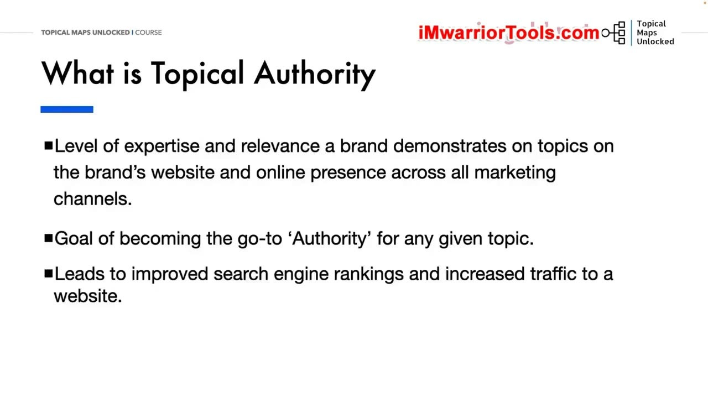
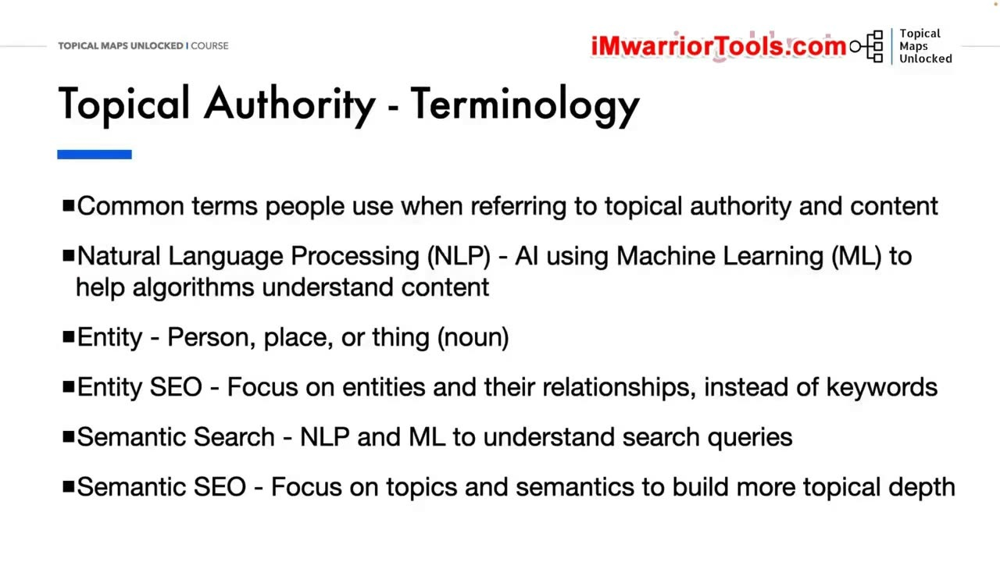
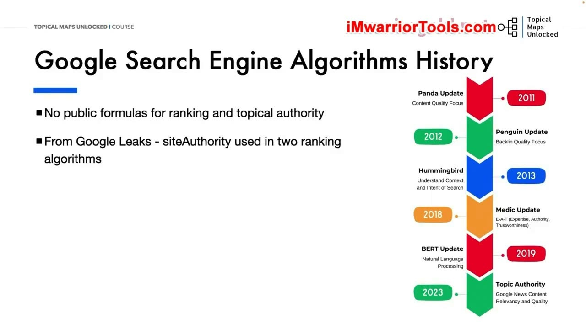
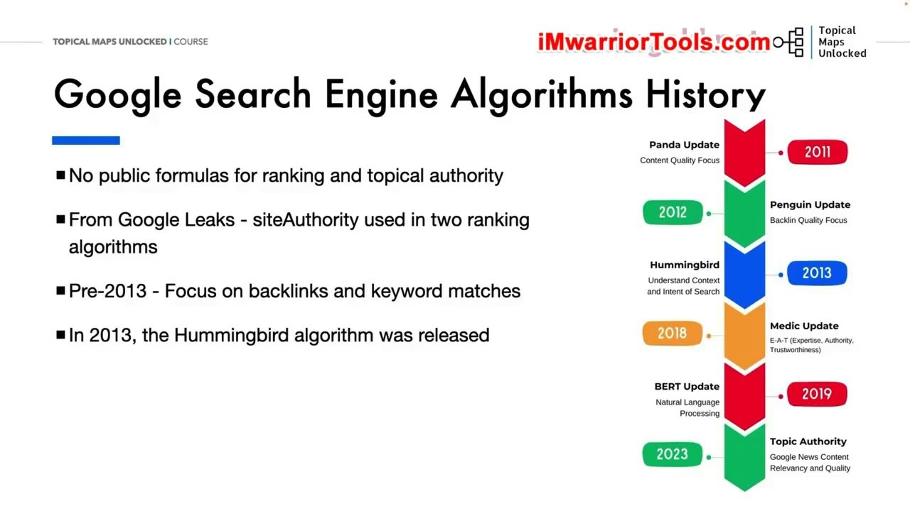
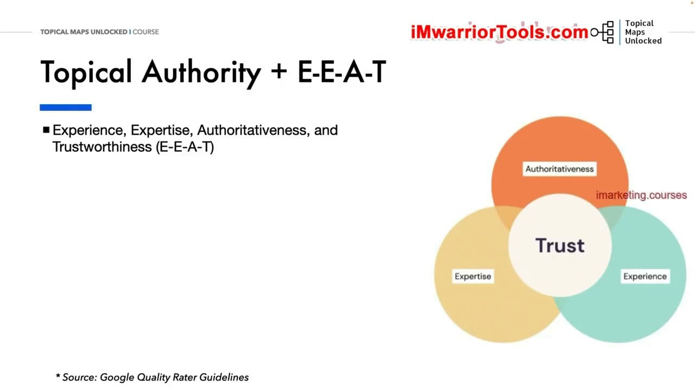
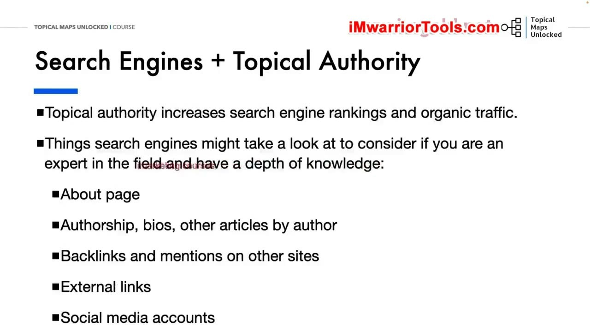
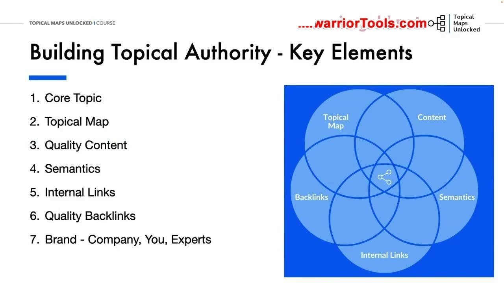
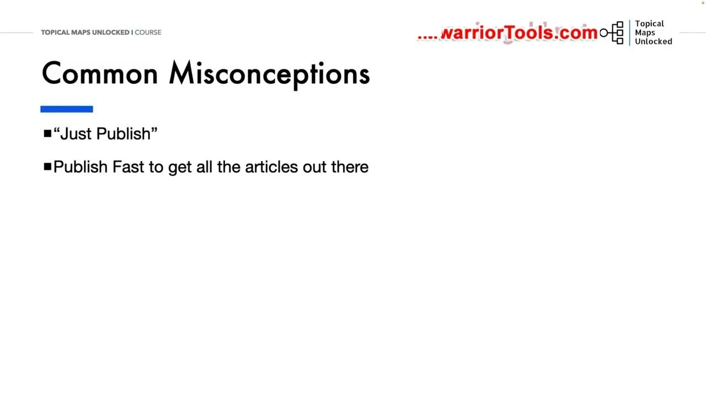
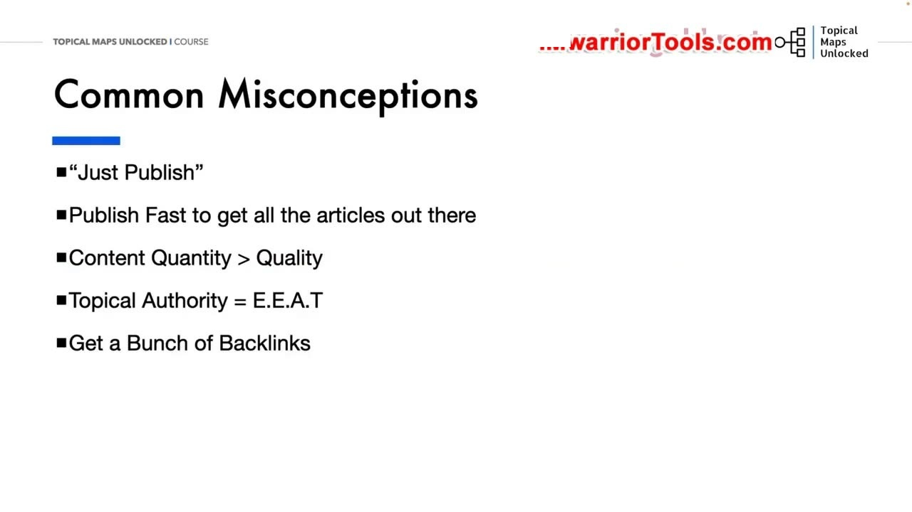
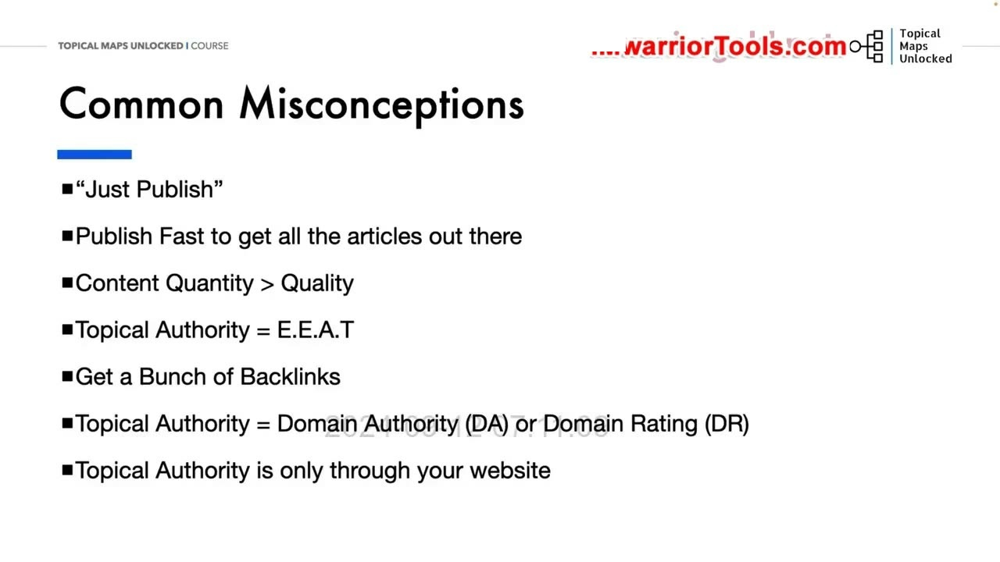

What Is Topical Authority
1. Topical Authority là gì và vì sao cần hiểu nó
Mục tiêu của bài học này là xây dựng một nền tảng để hiểu Topical authority. Yoyao sẽ nhắc đến một số thuật ngữ kỹ thuật nhưng không đi quá sâu vào chúng. Theo ông, đi quá sâu ngay từ đầu có thể khiến ý tưởng Topical authority trở nên khó hiểu hơn nhiều; ở đây, ông muốn giữ cách giải thích đơn giản nhất có thể.
Topical authority là mức độ chuyên môn và sự liên quan mà một thương hiệu thể hiện về một chủ đề cụ thể hoặc một tập hợp chủ đề. Phạm vi thể hiện không chỉ nằm trên website của thương hiệu mà còn ở sự hiện diện trực tuyến trên các kênh Marketing. Mục tiêu của thương hiệu là trở thành nơi được tìm đến và tin cậy đối với những chủ đề đó.
Yoyao giải thích rằng xây dựng Topical authority giúp cải thiện thứ hạng trên công cụ tìm kiếm và tăng traffic cho website. Nó cũng giúp nâng mức độ uy tín và niềm tin của khách truy cập cũng như khách hàng. Cách tiếp cận này sử dụng chuyên môn theo chủ đề để giúp website cạnh tranh với những website có Domain Authority hoặc Domain Rating cao hơn.
Trên những nền tảng tìm kiếm khác như YouTube, Pinterest và các nền tảng tương tự, hệ thống xếp hạng riêng có thể khác nhau. Tuy nhiên, ý tưởng chung vẫn là thể hiện chuyên môn và sự liên quan thông qua nội dung chất lượng.

2. NLP và Entity: những thuật ngữ sẽ gặp lại
Yoyao không định giải thích chi tiết những thuật ngữ rất kỹ thuật như các thuật ngữ trong bằng sáng chế. Nhưng ông vẫn muốn giới thiệu một số từ thường gặp, vì chúng sẽ được sử dụng trong các bài sau và xuất hiện nhiều trong các nhóm Facebook hay cộng đồng trực tuyến thảo luận về Topical authority, nội dung và tối ưu hóa.
Natural Language Processing, viết tắt NLP, được giới thiệu như việc AI sử dụng Machine Learning để giúp thuật toán công cụ tìm kiếm xử lý và hiểu nội dung theo cách con người hiểu. Chẳng hạn, đó là cách thuật toán phân tích câu và các cụm từ thay vì chỉ nhìn văn bản như một chuỗi từ rời rạc.
Entity có thể là một người, một địa điểm hoặc một thứ. Yoyao đặt câu hỏi vui: nghe có giống một danh từ không? Điều quan trọng trong cách ông giải thích là Entity phải là một thứ đơn nhất, độc đáo, được định nghĩa rõ ràng và có thể phân biệt. Đây là những khái niệm cơ bản để đi tiếp sang các chiến lược tối ưu liên quan.

3. Entity SEO, Semantic Search và Semantic SEO
Entity SEO là chiến lược tối ưu hóa tập trung vào các Entity và những mối quan hệ ngữ nghĩa giữa chúng, thay vì chỉ tập trung vào Keyword. Sự chú ý chuyển sang các đối tượng mà nội dung đề cập và cách các đối tượng đó có liên hệ với nhau.
Semantic Search mô tả cách công cụ tìm kiếm sử dụng NLP và Machine Learning để hiểu truy vấn, cũng như ý nghĩa của các từ và cụm từ được sử dụng trong truy vấn. Trong phần giới thiệu, đây là khái niệm nói về cách công cụ tìm kiếm hiểu điều người dùng đang tìm.
Semantic SEO là chiến lược tối ưu tập trung vào các chủ đề và Semantics, bao gồm ý nghĩa, ngữ cảnh và User intent có liên quan. Mục đích là xây dựng độ sâu chủ đề để công cụ tìm kiếm hiểu tốt hơn nội dung và website trong quá trình xếp hạng. Yoyao nhắc rằng đây mới là phần nhập môn; những nội dung này sẽ được đi qua tiếp trong khóa học, nên người học không cần lo phải nắm mọi chi tiết ngay ở đây.
4. Không có công thức công khai cho Topical Authority
Để hiểu vị trí của Topical authority, Yoyao chuyển sang lịch sử cập nhật thuật toán tìm kiếm Google. Theo cách ông trình bày, khi các bản cập nhật phát triển, chúng ngày càng hướng đến những website và thương hiệu toàn diện mà người dùng có thể tin tưởng.
Không có công thức công khai cụ thể cho Topical authority hay cho cách các công cụ tìm kiếm xếp hạng. Vì vậy, người làm SEO chỉ có thể dựa vào kinh nghiệm và thử nghiệm để đưa ra những giả định và phán đoán tốt nhất của mình. Việc có thêm thông tin về một thuộc tính không đồng nghĩa đã biết công thức hoặc mức độ quan trọng của nó.
Ông dẫn lại vụ rò rỉ tài liệu Google API Content Warehouse như một nguồn giúp nhìn vào những thuộc tính Google theo dõi và có thể sử dụng cho mục đích xếp hạng. Tuy vậy, tài liệu không cung cấp công thức hoặc trọng số cho từng yếu tố. Ví dụ ông nêu là thuộc tính siteAuthority trong mô-đun Compressed Quality Signals, được nhắc tới cùng hai hệ thống Mustang và TeraGoogle.
Điểm giới hạn được ông nhấn mạnh ngay sau ví dụ đó là: chúng ta không biết siteAuthority được tính như thế nào và quan trọng tới đâu. Phần trình bày này dùng thông tin rò rỉ để minh họa những gì có thể quan sát, đồng thời giữ rõ những điều chưa biết, chứ không đưa ra một công thức tính Topical authority.

5. Từ Keyword matches đến mức độ liên quan và niềm tin
Theo phần lịch sử được Yoyao giới thiệu, trước năm 2013, trọng tâm là Backlinks và Keyword matches khi xếp hạng website. Năm 2013, Hummingbird được phát hành; mức độ liên quan của nội dung đối với Search intent trở thành một yếu tố lớn hơn trong cách nhìn về xếp hạng tìm kiếm.
Từ đó, ông mô tả những cập nhật lớn chuyển thêm sự tập trung vào xây dựng niềm tin, chất lượng nội dung và thẩm quyền chủ đề tổng thể của website. Những ví dụ được nêu gồm Medic, BERT, Product reviews, Helpful content, Spam, Link spam và các Core updates.
Dòng thời gian trên slide cũng đặt Panda ở năm 2011, Penguin ở năm 2012, Hummingbird ở năm 2013, Medic ở năm 2018 và BERT ở năm 2019. Ở mốc 2023, hình minh họa ghi Topic Authority trong bối cảnh chất lượng và mức độ liên quan của nội dung Google News. Những mốc đó là phần minh họa cho cách bài học dẫn tới vấn đề chủ đề, chất lượng và sự tin cậy.

6. E-E-A-T: bốn khía cạnh được giải thích trong bài
Topical authority và E-E-A-T thường được thảo luận cùng nhau. Tuy nhiên, Yoyao lưu ý rằng E-E-A-T không phải một yếu tố xếp hạng trực tiếp. E-E-A-T là viết tắt của Experience, Expertise, Authoritativeness và Trustworthiness.
Google thuê những người đánh giá chất lượng tìm kiếm để xem các kết quả tìm kiếm và nội dung website. Họ đánh giá chất lượng và mức độ liên quan. Yoyao sử dụng bối cảnh này để giải thích từng chữ cái thay vì gộp cả cụm thành một điểm số duy nhất.
Experience, chữ E đầu tiên, đề cập tới trải nghiệm trực tiếp của tác giả hoặc người tạo nội dung với một chủ đề cụ thể. Expertise là kiến thức hoặc kỹ năng thực tế mà người đó có về chủ đề. Hai phần này đều liên quan tới người tạo nội dung, nhưng nhấn vào những khía cạnh khác nhau của sự hiểu biết và trải nghiệm.
Authoritativeness nói về mức độ tác giả hoặc người sáng tạo được biết đến như một nơi đáng tìm đến, một thẩm quyền về chủ đề. Cuối cùng, Trustworthiness đặt vấn đề mức độ đáng tin của nội dung: nó có chính xác, trung thực, an toàn và đáng tin cậy hay không. Hình minh họa đặt Trust ở trung tâm các phần còn lại để giúp người học theo dõi mối liên hệ giữa chúng.

7. Những tín hiệu từ website và thương hiệu
Đích đến là để website trở thành một nơi đáng tin cậy về các chủ đề của mình, qua đó hỗ trợ thứ hạng và traffic tự nhiên. Nhưng vì không có công thức công khai để đo Topical authority, Yoyao giải thích rằng phải tập hợp những gì đã biết về thuật toán và xem xét các yếu tố khác nhau mà công cụ tìm kiếm có thể đánh giá.
Các khu vực ông liệt kê gồm About page, thông tin tác giả, tiểu sử và những bài khác của tác giả. Ngoài website còn có Backlinks và các lượt nhắc đến trên những website khác, nhất là các website trong cùng ngành. External links và các tài khoản Social media cũng nằm trong danh sách được giới thiệu.
Ông còn nhắc tới các trang Disclaimer và chính sách của website. Ví dụ được đặt dưới dạng một câu hỏi: hãy tưởng tượng bạn vào một trang Disclaimer hoặc Privacy policy và nội dung của nó hoàn toàn vô nghĩa; bạn có tin tưởng website đó không?
Câu hỏi làm rõ cách bài học nhìn vấn đề tin cậy: không chỉ một bài viết riêng lẻ mà cả những khu vực thể hiện website là ai và hoạt động như thế nào. Danh sách này được đưa ra như những yếu tố cần xem xét, không phải một công thức trọng số được công khai.

8. Core topic và Topical map đặt nền tảng nội dung
Để xây dựng Topical authority hiệu quả, Yoyao bắt đầu từ Core topic nằm ở trung tâm. Một thương hiệu có thể có nhiều Core topics tùy quy mô công ty và số thương hiệu trong hoạt động kinh doanh. Vì thế, việc bắt đầu từ chủ đề cốt lõi không có nghĩa mọi doanh nghiệp chỉ được phép có một chủ đề duy nhất.
Xác định các Core topics giúp thiết lập nền tảng và phạm vi chuyên môn. Nó giúp tập trung nỗ lực tạo nội dung vào các lĩnh vực mà thương hiệu có thể thể hiện kiến thức sâu và đem lại giá trị cho đối tượng mục tiêu. Đây là bước làm rõ mình muốn xây dựng chuyên môn ở đâu trước khi mở rộng hệ thống nội dung.
Tiếp theo là Topical map, dùng để tổ chức hệ thống phân cấp nội dung website và giúp bảo đảm mức độ bao phủ toàn diện đối với các chủ đề cốt lõi cũng như các chủ đề phụ. Bản đồ hỗ trợ cả người dùng và công cụ tìm kiếm hiểu mối quan hệ giữa những phần nội dung, đồng thời điều hướng qua độ sâu chủ đề của website. Trên sơ đồ tổng thể, đó là một yếu tố liên hệ với những yếu tố khác, không đứng tách riêng khỏi nội dung và liên kết.

9. Quality content và Semantics thể hiện độ sâu chủ đề
Nội dung chất lượng cao, có thông tin và hấp dẫn là chìa khóa để thể hiện chuyên môn và xây dựng niềm tin với đối tượng mục tiêu. Yoyao nhấn vào việc tạo nội dung toàn diện, được nghiên cứu kỹ. Khi làm điều đó, website có thể trở thành một nguồn tài nguyên có giá trị cho những Core topics của mình.
Semantics là yếu tố tiếp theo. Việc sử dụng các Semantic keywords và Entity có liên quan tới chủ đề cốt lõi giúp củng cố mức độ liên quan của website đối với công cụ tìm kiếm. Mức độ bao phủ chủ đề và cách dùng ngôn ngữ liên quan cần đi cùng chất lượng nội dung.
Trong cách giải thích của bài học, sự kết hợp này giúp thuật toán hiểu nội dung tốt hơn và xếp hạng cho những truy vấn có liên quan. Bởi vậy, việc chọn Keyword không được trình bày như một thao tác tách khỏi nội dung: những từ và Entity được dùng cần phản ánh chính chủ đề mà thương hiệu đang xây dựng độ sâu.
10. Internal links và Quality backlinks giữ vai trò khác nhau
Internal linking là một trong những yếu tố chính mà bạn có được từ Topical map. Cấu trúc Internal links được xây dựng có chiến lược giúp dẫn người dùng tới những tài nguyên khác cùng chủ đề và phân phối giá trị liên kết giữa các trang.
Những liên kết đó hỗ trợ, củng cố cấu trúc chủ đề và giúp công cụ tìm kiếm hiểu mối quan hệ giữa các phần nội dung. Nó tiếp nối vai trò của Topical map: không chỉ tổ chức những chủ đề trên sơ đồ, mà còn thể hiện mối liên hệ ấy trong cấu trúc liên kết của website.
Tuy nhiên, Internal links không phải loại liên kết quan trọng duy nhất. Yoyao cũng nhấn mạnh những Backlinks chất lượng cao, có liên quan, đến từ các website uy tín trong lĩnh vực. Theo cách ông giải thích, đó là những tín hiệu tin cậy cho thấy các chuyên gia khác công nhận website và nội dung như một nguồn tài nguyên có giá trị.
Giá trị được mô tả ở đây gắn với những Core topics mà thương hiệu đang xây dựng. Vì vậy, phần nói về Backlinks không được tách khỏi câu hỏi liên quan tới lĩnh vực và chất lượng của nguồn liên kết.
11. Brand: công ty, con người và chuyên gia
Brand là yếu tố tiếp theo trong sơ đồ. Thương hiệu được tạo nên từ công ty, nhân viên, chính bạn, các chuyên gia làm việc cùng và những điều mọi người nghĩ về các chủ thể đó. Nó không chỉ là tên của website hoặc một biểu tượng được đặt lên đầu trang.
Yoyao coi thẩm quyền và chuyên môn được nhận thức của thương hiệu là một nền tảng của Topical authority. Việc thể hiện kiến thức của công ty, chuyên môn cá nhân và Thought leadership qua nội dung cũng như sự hiện diện thương hiệu rộng hơn góp phần xây dựng uy tín và niềm tin.
Xây dựng Topical authority đòi hỏi nỗ lực nhất quán trên tất cả các yếu tố đã trình bày: Core topic, Topical map, Quality content, Semantics, Internal links, Quality backlinks và Brand. Ông giải thích rằng lợi ích dài hạn đối với khả năng hiển thị tìm kiếm, sự tương tác của người dùng và uy tín thương hiệu khiến đây trở thành một khoản đầu tư quan trọng cho thương hiệu và website.
12. Hiểu lầm: chỉ cần xuất bản hoặc xuất bản thật nhanh
Yoyao chuyển sang những hiểu lầm thường gặp. Đầu tiên là câu “Just Publish”, hay chỉ cần xuất bản. Theo ông, cách nghĩ đó đã lỗi thời. Ông nói trước đây nó từng là câu được nhiều người làm nội dung trực tuyến nhắc lại, nhưng các công cụ AI và những cập nhật thuật toán đã khiến cách làm chỉ dựa vào xuất bản không còn đủ.
Xây dựng Topical authority thực sự đòi hỏi thời gian và nỗ lực nhất quán trong nghiên cứu chủ đề, tạo nội dung chất lượng cao, nhận những Backlinks có liên quan và các lượt nhắc đến. Đây là một chiến lược dài hạn, không chỉ là việc đưa một số lượng bài viết lên website cho thật nhanh.
Ông cũng cảnh báo rằng có thể nhìn thấy thành công nhanh, nhưng kiểu thành công đó không nhất thiết kéo dài. Trong mạch của phần hiểu lầm này, ông đặt tốc độ xuất bản bên cạnh nhu cầu nghiên cứu và tạo nội dung có chất lượng, thay vì coi việc đăng xong tất cả bài càng sớm càng tốt là toàn bộ chiến lược.

13. Chất lượng, E-E-A-T và số lượng Backlinks
Với câu hỏi số lượng hay chất lượng nội dung, Yoyao luôn chọn chất lượng. Ông đặt ra một phép so sánh để người học tự trả lời: bạn muốn theo dõi một website xuất bản 10 bài chất lượng thấp đến trung bình mỗi tuần, hay một website xuất bản một bài chất lượng cao mỗi hai tuần?
Hiểu lầm tiếp theo là đồng nhất Topical authority với E-E-A-T. Hai khái niệm có liên hệ chặt chẽ nhưng không giống nhau. Việc thường xuyên thảo luận chúng cùng nhau không có nghĩa có thể thay thế khái niệm này bằng khái niệm kia.
Tương tự như việc chỉ tìm cách xuất bản một loạt bài, có một loạt Backlinks cũng không nên là mục tiêu tự thân. Mức độ liên quan và chất lượng của các liên kết quan trọng hơn số lượng đơn thuần. Yoyao nhắc lại lời giải thích của Google rằng một cách vô hiệu hóa những liên kết dạng spam là xem xét mức độ liên quan chủ đề từ trang này sang trang khác.
Phần này nối lại hai ý đã xuất hiện trước đó: nội dung cần chất lượng và liên kết cần phù hợp với chủ đề. Không nên thay hai yêu cầu ấy bằng một cuộc chạy theo con số bài viết hoặc số liên kết.

14. DA/DR, tín hiệu ngoài trang và khả năng bao phủ nhiều niche
Topical authority không giống Domain Authority hoặc Domain Rating của Moz và Ahrefs. Những chỉ số về tên miền mô tả sức mạnh tổng thể của một domain, trong khi website vẫn cần thể hiện độ sâu và chuyên môn về các chủ đề cụ thể để có thể xếp hạng tốt cho các chủ đề đó.
Nó cũng không chỉ xem những gì nằm trên các trang của website. Các tín hiệu Off-page như Backlinks có liên quan, các lượt nhắc đến thương hiệu và Social media đều góp phần thiết lập thẩm quyền của website về chủ đề, trong mắt công cụ tìm kiếm và người dùng.
Một ý kiến khác là chỉ có thể đạt được Topical authority trong một niche rất nhỏ. Yoyao phản biện rằng website có thể bao phủ nhiều chủ đề, miễn là xây dựng những Topic hubs chuyên biệt với nội dung chuyên sâu, ở mức độ chuyên gia, cho từng niche và từng lĩnh vực.
Điều quan trọng là cách bạn bao phủ những niche và sub-niches đó. Bao phủ có cấu trúc là vấn đề khóa học sẽ tiếp tục thảo luận khi xây dựng Topical map. Bài học kết thúc bằng lời hẹn gặp trong bài tiếp theo, sau khi đã phân biệt sự bao phủ có tổ chức với việc đơn giản đăng nhiều nội dung về nhiều chủ đề.

Nguồn và đối chiếu
- Topical Maps Unlocked 2.0 · 01-What Is Topical Authority_ (Video bài học chính).
- Đối chiếu ngữ nghĩa với bản tiếng Anh: Bản Tiếng Anh/02-Tropical Authority Module/01-What Is Topical Authority.mp4 (xác thực các thuật ngữ siteAuthority, Compressed Quality Signals, Mustang, TeraGoogle).